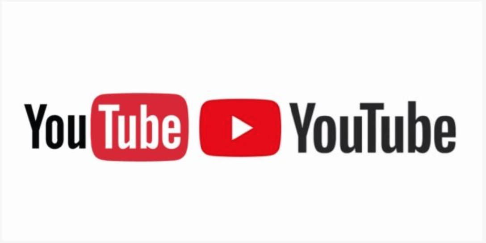
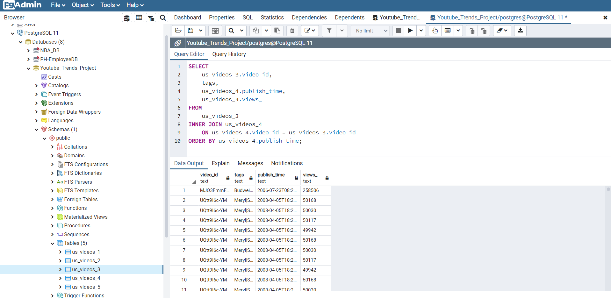
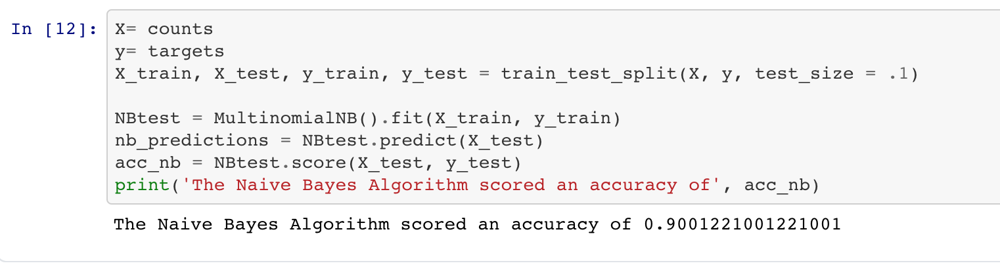
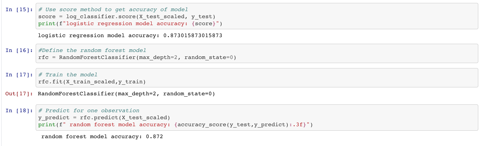

Intro

As the world's largest video hosting website, YouTube has had huge impact in many fields and in every day of our life. It provides new challenges and new opportunities for both individuals and institutions, making what they do and the world better. Each Youtuber is a powerful opportunity to build new products, services, campaigns, brands and more that people will love. The more views, likes or followers the youtubers get, the more popular the channel will be and the higher the opportunity for them to become Trending in the YouTube community.
In this project, we will look at factors that make a Youtube video trend. We will explore the statistics of TrendingYouTube videos to find what makes these videos so popular, and analyze what are the main characteristics of the most popular videos on YouTube.
Source of Data

We used a dataset from Kaggle that contains statistics of some top trending YouTube videos.
In order to make our analysis more accurate and relevant, we only focused on US and UK videos, reducing the dataset’s size to 45k rows and 16 columns in Postgres SQL. We will be connecting our Postgres SQL database to Pandas. Our data source was Kaggle and a raw CSV file. The SQL Database was created and the CSV file has been split into 5 tables. The ERD and the queries to create the table and the join are also provided in the repository.
Machine Learning model
SciKitLearn is the ML library we'll be using to create a classifier. Our training and testing setup is categorizing number of views into groups (target variable: y) and the tag names as our independent variable (features: X). We currently plan to use random forest model to predict the trend. We will also use Naive Bayes to predict the category ID based on the tag.

Our second machine learning model is created to find significant tags (p value < 0.05) to help predict view counts of videos. We used a logistic regression model because it is generally used to predict how the impact the independent variable(s) has on the dependent variable.

It is showing the trends among the globe and shaping the world’s events. In this project, we will exploring the statistics of TrendingYouTube videos to find what makes these videos so popular, and analyze what are the main characteristics of the most popular videos on YouTube.
Other Statistical Findings
while (!deck.isInOrder()) {
print 'Iteration ' + i;
deck.shuffle();
i++;
}
print 'It took ' + i + ' iterations to sort the deck.';